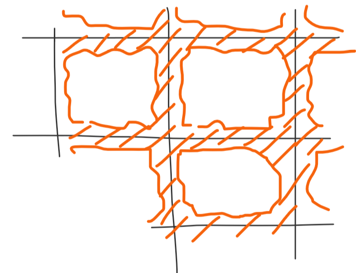
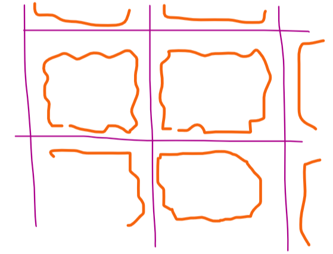

Определение: \(G \subset \mathbb{R}^n\), \(G\) замкнута и ограничена, \(\mu(\partial G) = 0\). Представление \(G = \cup_{k = 1}^lG_k\), где \(\forall k, m \,\,\,\, G_k\cap G_m \subset (\partial G_k)\cap (\partial G_m)\) – разбиение \(G\) в общем смысле.
Если \(\forall k\) зафиксирована \(\xi_k \in G_k\), то \(\{(G_k, \xi_k)\}_{k = 1}^l\) – размеченное разбиение.
Определение: Пусть \(f\) определена на \(G\), есть \(\{(G_k, \xi_k)\}_{k = 1}^l\). Тогда \(\displaystyle \sum_{k = 1}^{}f(\xi_k)\mu(G_k)\) – интегральная сумма \(f\).
Если \(\exists I \,\,\,\, \forall \varepsilon > 0 \,\,\,\, \exists \delta > 0: \,\,\,\, \forall \{G_k, \xi_k\}\) с диаметром \(d\) меньшим \(\delta\,\,\,\, \left|\sigma_{f}(\cup_k G_k) - I\right| < \varepsilon\), где \(d = \max_k \max_{\mathbf{x}, \mathbf{y} \in \operatorname{Cl}G_k} \rho(\mathbf{x}, \mathbf{y})\), то \(I\) – интеграл. Обозначается: \(I = \underbrace{\int\ldots\int}_{G}fdx_1 \ldots dx_n\).
Замечание: По-прежнему верно необходимое условие интегрируемости, а именно ограниченность функции. И выполнен критерий интегрируемости \(S - s < \varepsilon\).
Теорема: (теорема об эквивалентности двух определений интегралов) Общее определение интеграла на \(G\iff\) ранее данному определению на параллелограме.
Доказательство:
(в \(\mathbb{R}^2\))
\(\boxed{\Longrightarrow} \,\,\,\, f\) интегрируема на \(G\) в общем смысле. Рассмотрим разбиение \(G\) прямоугольной сеткой.
Сравним \(\sigma_f(\cup_k G_k)\), где \(G_k\) – прямоугольники с картинки выше, с интегральной суммой \(\sigma_f(\mathcal{T})\), где \(\mathcal{T}\) разбиение, составленное из дополнений до большого прямоугольника, см. ниже.
\[\left|\sigma_f(\mathcal{T}) -\sigma_f(\cup_k G_k)\right|\]
Берем во второй сумме только прямоугольники, которые внутри \(G\) и только прямоугольники (они совпадают в двух суммах) с совпадающим \(\xi_i\). Тогда останутся только прямоугольники ‘’зацепленные’’ с границей. Запишем для них неравенство:
\(\left|\sigma_f(\cup_k G_k) - \sigma_f(\mathcal{T})\right| \leqslant 2M \varepsilon\), где \(M = \sup_G|f|\)
Почему \(2M \varepsilon\), \(\varepsilon\) – это суммарная площадь прямоугольников накрывающих границу, а так как площадь границы \(0\) можем намельчить, так чтобы площадь прямоугольников была меньше \(\varepsilon\), \(M\) покрывает разность, полученную из различия \(\xi_i\). Тут главное, что предел существует, поэтому можем выбрать вторую интегральную сумму удобной.
\(\boxed{\Longleftarrow}\) \(f \in R(\Pi), \,\,\,\, G \subset \Pi\). Запишем критерий интегрируемости: \(\forall \varepsilon > 0 \,\,\,\, \exists \delta > 0 \,\,\,\, \forall \mathcal{T} d(\mathcal{T}) < \delta \,\,\,\, S(\mathcal{T}) - s(\mathcal{T}) < \varepsilon\).
Обозначим границей разбиения \(\partial \mathcal T\) величину \(\partial G \cup \{\) отрезки сетки внутри \(G\}\).
Пусть \(Q\) открытая многоугольная фигура с \(\mu(Q) < \frac{\varepsilon}{M}, \,\,\,\, Q \supset \partial T\).

Пусть \(\delta = \rho(\partial T, \partial Q)\), то есть минимум расстояний между рыжим и фиолетовым на картинке:

Пусть \(\cup_k G_k\) – разбиение (общее) \(G\) с диаметром меньшим \(\delta\).
\[S(\cup_k G_k) = \displaystyle \sum_{k = 1}M_k \mu(G_k) = \displaystyle \sum_{G_k\cap \partial \mathcal{T}\ne \varnothing} \mu(G_k) + \displaystyle \sum_{G_k\cap \partial \mathcal{T}= \varnothing} \mu(G_k) \leqslant\]
Все \(G_k\) с \(G_k\cap \partial \mathcal{T}\ne \varnothing\) лежат внутри \(Q\) в силу выбора \(\delta\).
Глобальная идея: возьмем маленькую дельту, набросаем горох, получим, что ‘’количество’’ гороха в \(Q\) маленькое.
Вернемся к неравенству: (первая сумма меньше \(\varepsilon\), потому что \(\mu(Q) < \frac{\varepsilon}{M}\)) \(\leqslant \varepsilon + \displaystyle \sum_{(i, j)}\displaystyle \sum_{k: \,\,\,\, G_k \subset \Pi_{ij}}M_k \mu(G_k) < \varepsilon + \displaystyle \sum_{(i, j)}M_{ij} \mu(\Pi_{ij}) = S(\mathcal{T}) + \varepsilon\)
Имеем \(S(\cup_k G_k) \leqslant S(\mathcal{T}) + \varepsilon\) и \(s(\cup_k G_k) > s(\mathcal{T}) - \varepsilon\), а значит \(S(\cup_k G_k) - s(\cup_k G_k) < 3 \varepsilon \,\,\,\,\blacksquare\)
Лемма: Пусть \(\varphi: \mathbb{R}^n \to \mathbb{R}, \,\,\,\, \varphi \in C^1(G), \,\,\,\, G\) выпукла (площадь границы ноль), замкнута и ограничена.
Тогда \(\mathbf{x}_1, \mathbf{x}_2 \in G \,\,\,\, \exists \mathbf{c} \in G: \,\,\,\, \varphi(\mathbf{x}_2) - \varphi(\mathbf{x}_1) = \left(\mathbf{x}_2 - \mathbf{x}_1, \operatorname{grad}\varphi(\mathbf{c})\right)\).
Доказательство:
\(F(t) = \varphi(\mathbf{x}_1 + (\mathbf{x}_2 - \mathbf{x}_1)t), \,\,\,\, t \in [0, 1]\).
Запишем формулу Лагранжа для \(F(t)\): \(F(1) - F(0) = F'(\xi)\cdot (1 - 0) \implies \varphi(\mathbf{x}_2) - \varphi(\mathbf{x}_1) = \displaystyle \sum_{n = 1}^{n}\frac{\partial \varphi}{\partial x_i}(i)({x_2}_i - {x_1}_i) \,\,\,\,\blacksquare\)
Лемма: Пусть \(\varphi: G \to \mathbb{R}, \,\,\,\, \varphi \in C^1(G), \,\,\,\, G\) выпукла (площадь границы ноль), замкнута и ограничена.
Тогда \(\mathbf{x}_1, \mathbf{x}_2 \in G \,\,\,\, \exists \mathbf{c} \in G: \,\,\,\, ||\varphi(\mathbf{x}_2) - \varphi(\mathbf{x}_1)|| = \mathbf{c}\cdot||\mathbf{x}_2 - \mathbf{x}_1||\).
Доказательство: \[||\varphi(\mathbf{x}_2) - \varphi(\mathbf{x}_1)|| = \sqrt{\displaystyle \sum_{k = 1}^{n}(\varphi_k(\mathbf{x}_2) - \varphi_k(\mathbf{x}_1))^2}\leqslant\] \[\leqslant \displaystyle \sum_{k = 1}^{n}|\varphi_k(\mathbf{x}_2) - \varphi_k(\mathbf{x}_1)| = \displaystyle \sum_{k = 1}^{n}|(\mathbf{x}_2 - \mathbf{x}_1, \operatorname{grad}\varphi_k(c_k))| \leqslant ||\mathbf{x}_2 - \mathbf{x}_1||\cdot \displaystyle \sum_{k = 1}^{n}\max_{G}||\operatorname{grad} \varphi_k|| \,\,\,\,\blacksquare\]